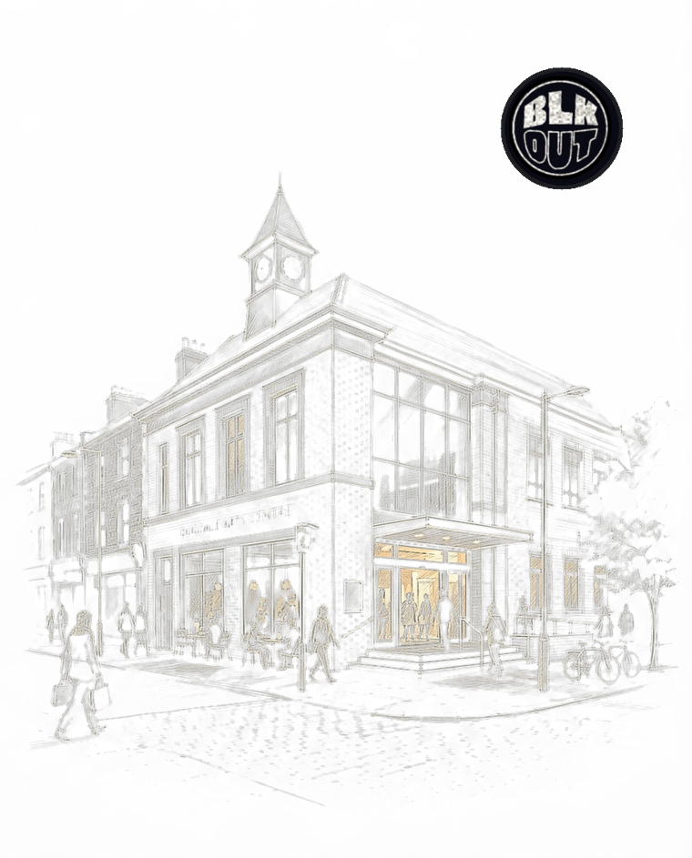

Enfield LGBT Network
The borough's LGBT+ consortium — voluntary and statutory organisations and residents working to improve life for LGBTQ+ Enfield.
One community. Many doors. This one is Enfield's.
As far as we can find, nothing has ever been organised specifically for Black queer men in Enfield — and around fifty-eight thousand Black residents call the borough home. So this page starts it. You're not waiting for a community. It's been waiting for a door.
Open the door ↓
What's organised for Black queer men in the borough, as we find it — and help us find it.
We searched two ways and found nothing organised specifically for Black queer men in Enfield — checked 27 August 2026. That's a report, not a verdict: if we're wrong, the panel at the bottom of this page is where you tell us, and this page changes. Meanwhile, the door below is open.
The borough's queer civic life, as it stands. Use it — and tell them we sent you.
The borough's LGBT+ consortium — voluntary and statutory organisations and residents working to improve life for LGBTQ+ Enfield.
Black queer men have never let a borough boundary decide where community happens — and Enfield men have always travelled for their people. Where you're centred, not just welcome:
Europe's largest celebration for LGBTQ+ people of African, Asian, Caribbean, Middle Eastern and Latin American descent — co-founded by Lady Phyll, who grew up in this borough.
Black-owned queer venue in Hackney Wick — down the line from the borough.
Fellowship and support for Black LGBTQ+ people of faith.
Free, confidential, no GP needed, no judgement — and your business stays yours.
Free, discreet home test kits and PrEP by post anywhere in London — order online, nothing to explain to anyone.
Soho's LGBTQ+ specialist sexual health and HIV service — Europe's largest, and long the home clinic of queer London.
Every NHS sexual health service near you — testing, treatment, PrEP — searchable by postcode.
Confidential peer support for African and Caribbean people living with HIV — twice monthly at the Alexander Pringle Centre, North Middlesex Hospital.
The 2021 Census counted around 58,200 Black residents in Enfield — one of the largest Black communities in north London, bigger than Haringey's. On the estimates we publish, that's 1,300 to 1,800 Black queer men in the borough. Between those men and the nearest thing built for them lies the whole of the North Circular. These are working estimates and we welcome correction — but the point stands: we were never a niche. We were just never counted.
| Borough | Black residents (2021) | Black queer men (est.) |
|---|---|---|
| Croydon | 88,500 | 2,000–2,800 |
| Newham | 88,200 | 2,000–2,700 |
| Lewisham | 81,900 | 1,800–2,600 |
| Southwark | 80,100 | 1,800–2,500 |
| Lambeth | 76,100 | 1,700–2,400 |
| Brent | 62,500 | 1,400–2,000 |
| Hackney | 59,300 | 1,300–1,900 |
| Enfield | 58,200 | 1,300–1,800 |
| Haringey | 52,400 | 1,200–1,700 |
| Waltham Forest | 46,700 | 1,000–1,500 |
2021 Census analysis — Who Are the UK's Black Queer Men? (BLKOUT's Critical Frequency dossier)
Enfield's Black queer history hasn't been written down — but it made history anyway. Phyll Opoku-Gyimah — Lady Phyll — grew up here, and the day in 1983 she was pulled into an Enfield Town shopfront while a National Front march passed became part of the story of why UK Black Pride exists. The borough with nothing built for Black queer men raised the woman who built it for all of us.
The rest — the elders of Edmonton and Ponders End, the nights, the photographs in shoeboxes — is still to be written, and the panel below is where it starts. First stories in, first names on it.
The doors are opening borough by borough. Step through, or help us open the next one.
The borough's Black story is on record — its Black queer chapter is still being written. Start here, and add to the shelf below.
Ten years of stories, 282,000 messages — and Enfield's chapter is still to be written. When the borough starts, the archive will be watching.
Browse the story archiveHonestly: nothing borough-based exists yet — the door below is where that changes. BLKOUT's national community is open to you today, and when a few Enfield men want a table in the borough, we'll help hold it.
Sexual Health London posts free test kits to any London address, every NHS clinic near you is searchable by postcode, and 56 Dean Street is a train ride south. No GP referral, no judgement.
BLKOUT is one community-owned co-operative for Black queer men across the UK — with a door in every borough. We're registered in Croydon and we belong wherever our men are. Enfield included, as of today.
Yes. Come as you are — nobody at this door asks you to be anything first, and your business stays yours.
Come as you are. We answer.
Leave your name and we'll keep you posted about Enfield — what starts, when it starts, and how to be part of starting it. This goes to BLKOUT, a co-operative owned by its members. No engagement machinery, nothing sold onward — just a community that answers.
The door is how we find each other. BLKOUTHUB is where we live.
The members' room: Black queer men across the UK, owned by the men in it. Why knock:
And don't just read about AIvor — talk with him. Our own voice, named for the man whose name is over every door. Ask him about BLKOUT, about Black queer life, about Enfield — he answers.
Talk with AIvor nowThis page is honest about how little is written down — and Enfield knows more than any archive. The nights that happened, the rooms that held us, the elders who remember: that's this page's missing history section, and the borough writes it. Tell us what we should know. Contributions get credited, if you want the credit.
This page is for Black queer men first. But if you serve this borough — NHS, social prescribing, council, community sector, creative health, or you run a room — there's a door for you too.
BLKOUT — the UK's community-owned co-operative for Black queer men. In your neighbourhood: https://events.blkoutuk.com/enfield/ · blkoutuk.com · rob@blkoutuk.com
We list our neighbours and our neighbours list us. That's how a borough works.